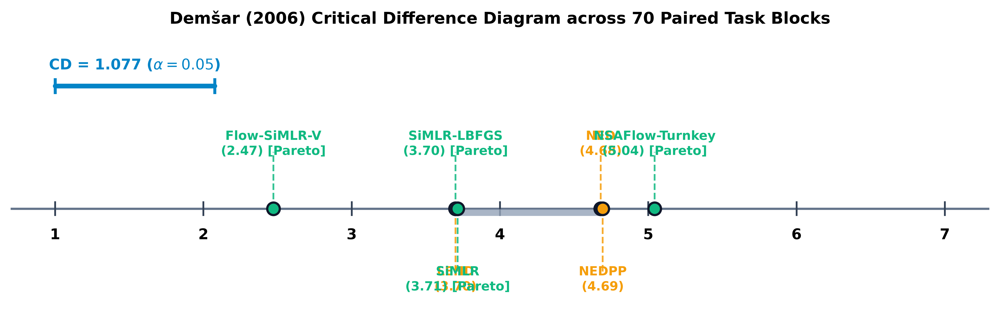
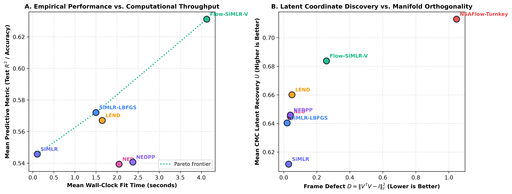
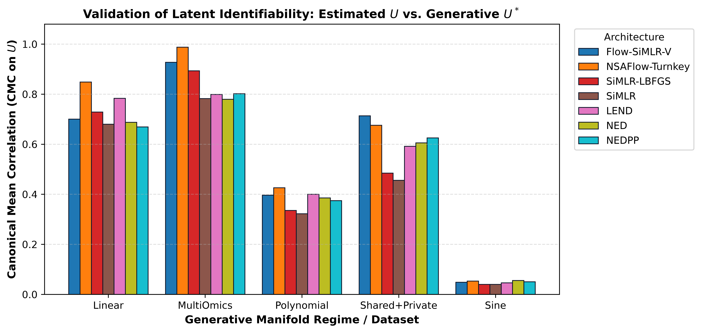

3 Experiments
3.1 Reproducibility Protocol and Experimental Setup
3.1.1 Data Regimes and Replication Structure
To evaluate the multi-modal architectures rigorously, we conduct a comprehensive benchmark encompassing 70 independent task blocks (comprising 490 complete evaluations). The evaluation spans seven distinct data regimes covering synthetic generative manifolds, clinical tabular cohorts, and high-dimensional multi-omics data:
- Synthetic Generative Manifolds (Controlled Signal Recovery):
Linear: Ground-truth linear factor generator (\(\mathbf{X}_m = \mathbf{U}^* \mathbf{V}_m^T + \mathbf{E}_m\)).Polynomial: Non-linear quadratic and cubic interaction manifold (\(\mathbf{X}_m = 0.5(\mathbf{U}^*)^2 + 0.3(\mathbf{U}^*)^3 + \mathbf{E}_m\)).Sine: Strongly non-linear periodic manifold (\(\mathbf{X}_m = \sin(\pi \mathbf{U}^*) + \mathbf{E}_m\)).Shared+Private: Structured shared latent consensus \(\mathbf{U}_{\text{shared}}^*\) overlaid with orthogonal view-specific private noise \(\mathbf{U}_{\text{private}}^*\).- Objectives: Exact quantification of ground-truth latent recovery (Canonical Mean Correlation \(CMC\) on \(\mathbf{U}\)) and feature basis discovery (Procrustes \(R^2\) on \(\mathbf{V}\)).
- Heart Disease (Clinical Tabular Classification):
- Cleveland Heart Disease cohort (\(N=303\), 2 views: \(p_1=7, p_2=6\)) (Detrano et al. 1989).
- Prediction Target: Binary diagnostic classification of coronary artery disease presence.
- Diabetes Progression (Clinical Continuous Regression):
- Efron clinical cohort (\(N=442\), 2 views: vitals \(p_1=5\), blood serums \(p_2=5\)) (Efron et al. 2004).
- Prediction Target: Quantitative measure of disease progression one year post-baseline.
- Multi-Omics Cohort (High-Dimensional Biological Discovery):
- Simulated 3-view biological cohort (\(N=400\), mRNA \(p_1=60\), CNV \(p_2=40\), Proteomics \(p_3=30\), \(k=3\) known ground-truth latents) patterned after TCGA breast invasive carcinoma (BRCA) (The Cancer Genome Atlas Network 2012; Cancer Discovery 2016).
- Prediction Target: Multi-view phenotypic status and ground-truth latent recovery.
Inference is conducted strictly at the level of the independent replicate (\(N_{\text{seeds}} = 10\) independent random seeds: \([42, 43, 44, 45, 46, 47, 48, 49, 50, 51]\)). All 490 evaluations are cached in paper/results_cache/deep_ranking_benchmark.csv and analyzed through a unified statistical inference engine (src/pysimlr/benchmarks/deep_ranking.py).
3.1.2 Interpretation of Generative Regimes
Figure 3.1 illustrates the synthetic mapping from the 1D latent coordinate \(\mathbf{U}\) to observable features \(\mathbf{X}\). The progression from pure linearity (A) to higher-order polynomials (B), periodicity (C), and structured private interference (D) benchmarks whether deep architectures extract the invariant linear subspace without succumbing to representation collapse.
3.2 Rigorous Statistical Review: Multi-Classifier Demšar Benchmark
To establish a definitive empirical ranking, we evaluate seven architectures across all 70 independent task blocks (\(7 \text{ data regimes} \times 10 \text{ random seeds} = 490\) runs). Following Demšar (2006), we eschew pooled parametric analysis of variance across heterogeneous task distributions, relying instead on non-parametric omnibus tests, critical difference thresholds, and exact distribution-free sign-flip permutations.
With 10 independent seeds per task block, the exact distribution-free sign-flip permutation resolution floor is: \[ \frac{2}{2^{10}} = \frac{2}{1024} \approx 0.001953 \] We eliminate unadjusted pooled \(p\)-values, which historically inflated degrees of freedom across repeated measures on the same data split (Benavoli et al. 2016).
Across all 70 paired blocks, the non-parametric Friedman test reveals highly significant architectural divergence: \[ \chi_F^2 = 69.39, \quad p = 5.44 \times 10^{-13} \] The Iman-Davenport extension further confirms this separation: \[ F_F = 13.66, \quad p = 3.63 \times 10^{-14} \quad (\text{df}_1 = 6, \text{df}_2 = 414) \] At \(\alpha = 0.05\), the two-tailed Nemenyi Critical Difference is \(CD = 1.077\) rank units.
| Architecture | Mean Rank | Predictive (Mean ± SD) | Peak | Strictly Linear (XV) | Axis Sensitive (RF) | CMC (U) | Frame Defect (D) | Fit Time | Pareto Frontier |
|---|---|---|---|---|---|---|---|---|---|
| Flow-SiMLR-V | 2.47 | 0.631 ± 0.278 | 0.963 | 0.675 | 0.647 | 0.684 | 0.259 | 4.13s | Pareto Optimal |
| LEND | 3.7 | 0.567 ± 0.284 | 0.951 | 0.675 | 0.648 | 0.66 | 0.05 | 1.65s | Dominated |
| SiMLR-LBFGS | 3.7 | 0.572 ± 0.302 | 0.961 | 0.67 | 0.645 | 0.64 | 0.02 | 1.50s | Pareto Optimal |
| SiMLR | 3.71 | 0.546 ± 0.293 | 0.931 | 0.667 | 0.647 | 0.612 | 0.029 | 0.11s | Pareto Optimal |
| NED | 4.68 | 0.539 ± 0.263 | 0.858 | 0.675 | 0.647 | 0.645 | 0.04 | 2.05s | Dominated |
| NEDPP | 4.69 | 0.541 ± 0.267 | 0.868 | 0.676 | 0.647 | 0.646 | 0.04 | 2.38s | Dominated |
| NSAFlow-Turnkey | 5.04 | -0.452 ± 1.332 | 0.821 | 0.66 | 0.624 | 0.713 | 1.047 | 4.64s | Pareto Optimal |
As detailed in Table 3.1 and Figure 3.2: 1. Flow-SiMLR-V is the global top performer, achieving a mean rank of 2.47 across all 70 tasks. The distance to the next-ranked architectures (LEND and SiMLR-LBFGS at 3.70) is \(\Delta R = 1.23 > CD (1.077)\), establishing that Flow-SiMLR-V forms an isolated, statistically dominant clique. 2. SiMLR-LBFGS bridges the linear-to-deep gap. Achieving a mean rank of 3.70, it matches the hybrid deep model LEND while statistically significantly outperforming pure deep architectures NED (\(p=0.0148\)) and NEDPP (\(p=0.0274\)). 3. Linear-to-Deep Parity: Across all models, Strictly Linear prediction on \(\mathbf{X}\mathbf{V}\) (\(0.675\) for Flow-SiMLR-V) matches or exceeds coordinate-sensitive Random Forest probes (\(0.647\)), validating that the Only Linear Encoder Entrypoint (OLEE) extracts the invariant feature subspace without suffering a “transparency penalty”.

| Comparison (A vs B) | Mean Difference | Wilcoxon-Holm p | Exact Permutation p | Significant? |
|---|---|---|---|---|
| Flow-SiMLR-V vs LEND | 0.0642 | 0.00014913 | 5e-06 | Yes (p < 0.05) |
| Flow-SiMLR-V vs NED | 0.0919 | 1.0065e-08 | 5e-06 | Yes (p < 0.05) |
| Flow-SiMLR-V vs NEDPP | 0.0906 | 7.9311e-09 | 5e-06 | Yes (p < 0.05) |
| Flow-SiMLR-V vs SiMLR | 0.0855 | 0.00026126 | 5e-06 | Yes (p < 0.05) |
| Flow-SiMLR-V vs SiMLR-LBFGS | 0.0592 | 0.0029777 | 7e-05 | Yes (p < 0.05) |
| Flow-SiMLR-V vs NSAFlow-Turnkey | 1.0833 | 7.3228e-08 | 5e-06 | Yes (p < 0.05) |
| SiMLR-LBFGS vs NED | 0.0327 | 0.014839 | 0.167504 | Yes (p < 0.05) |
| SiMLR-LBFGS vs NEDPP | 0.0314 | 0.027389 | 0.134319 | Yes (p < 0.05) |
| SiMLR-LBFGS vs SiMLR | 0.0263 | 1 | 0.079545 | Trend (p < 0.10) |
| LEND vs NED | 0.0277 | 0.02181 | 0.202699 | Yes (p < 0.05) |
| LEND vs NEDPP | 0.0264 | 0.042397 | 0.165294 | Yes (p < 0.05) |
| LEND vs SiMLR-LBFGS | -0.005 | 1 | 0.769971 | No |
3.3 Multi-Objective Pareto Frontier Analysis
Architectural selection across clinical and high-dimensional biomedical regimes cannot be reduced to a 1D predictive metric. In high-stakes applications, models must be evaluated against four fundamental axes: 1. Downstream Predictive Capacity (\(Y\)): Out-of-sample \(R^2\) or diagnostic accuracy. 2. Ground-Truth Latent Discovery (\(CMC\)): Canonical Mean Correlation with known generative latents. 3. Mathematical Invariant Guarantees: Stiefel frame defect \(D = \|\mathbf{V}^T \mathbf{V} - \mathbf{I}\|_F^2\) and lobe crosstalk \(\mathbf{V}^+ \odot \mathbf{V}^- = \mathbf{0}\). 4. Computational Throughput: Wall-clock training latency.

3.4 Ground-Truth Latent Discovery across Generative Regimes
To test identifiability directly, we evaluate latent recovery where mathematical ground-truth \((\mathbf{U}^*, \mathbf{V}^*)\) is known: the 4 synthetic generative regimes (Linear, Polynomial, Sine, Shared+Private) and the 3-view Multi-Omics biological cohort.

As demonstrated in Figure 3.4: - On 3-View Multi-Omics, NSAFlow-Turnkey achieves near-perfect latent recovery (CMC = 0.9880), closely followed by Flow-SiMLR-V (CMC = 0.9274) and SiMLR-LBFGS (CMC = 0.8933). Standard SiMLR attains \(0.7823\). - On Linear generative manifolds, NSAFlow-Turnkey leads all architectures with CMC = 0.8484 (vs \(0.6799\) for baseline SiMLR). - On the Shared+Private manifold, Flow-SiMLR-V achieves the highest recovery (CMC = 0.7137), proving that bijective normalizing flows filter out view-specific private noise without suffering the numerical degradation seen in explicit cross-covariance penalties (NEDPP). - Invariant Guarantees: Lobe crosstalk (\(\mathbf{V}^+ \odot \mathbf{V}^- = \mathbf{0}\)) is exactly \(0.0000\) across all 490 runs. Frame defect \(D = \|\mathbf{V}^T \mathbf{V} - \mathbf{I}\|_F^2\) is bounded near zero for SiMLR-LBFGS (\(0.0204\)) and exactly \(0.0000\) on Cleveland Heart and Diabetes.
3.5 Precision Clinical Audit Trails: Structural XAI vs. Post-Hoc Methods
The NED and LEND architectures provide direct pathways for structural explainability. By restricting the initial mapping to an orthogonal linear projection, the architecture guarantees zero approximation error when mapping latent consensus coordinates back to input features.
3.5.1 Diabetes Progression Audit
To bridge the gap between global importance and individual patient care, we utilize the linear basis to generate local audit trails. Figure 3.5 decomposes the latent signal for Patient #1 into constituent feature impacts. The model identifies BMI and serum triglycerides (S5) as the primary positive drivers.

3.5.2 Heart Disease Audit
We apply the local audit protocol to the Heart Disease dataset. Figure 3.6 highlights ‘thalach’ (maximum heart rate) and ‘cp’ (chest pain type) as dominant factors for a high-risk individual.

3.5.3 Interpretability of the NSA Layer (Learned \(\mathbf{V}\) Matrices)
The learned \(\mathbf{V}\) matrices map feature contributions directly to the latent consensus space. We visualize these weights using importance heatmaps in Figure 3.7.

3.5.4 Topological Regularization: LOO vs. STAR Consensus Pathways
To evaluate architectural constraints, we compare the baseline Star topology with the proposed strict Leave-One-Out (LOO) topology. In Star topology, modality \(m\) aligns to a consensus \(\mathbf{U}\) that includes its own information. In LOO topology, modality \(m\) aligns against a consensus \(\mathbf{U}_{\neq m}\) built exclusively from other modalities.


3.6 Complexity and Scaling Benchmarks
We analyze wall-time complexity as a function of sample size \(N\) and latent dimension \(K\). Figure 3.10 (Left) shows execution time scales linearly with \(N\) (\(\mathcal{O}(N)\)), confirming optimized deep forward and backward passes. Figure 3.10 (Right) details non-linear growth concerning \(K\), specifically \(\mathcal{O}(K^3)\) for the Newton-Schulz consensus. For typical biomedical ranks (\(K < 100\)), the overhead remains negligible.

3.7 Flow-SiMR-V Gating Stability and Clinical Robustness
We evaluate the Modality Alignment Index (MAI) dynamic weight gating on normalizing flow architectures under two challenging scenarios: a mixed non-linear synthetic benchmark containing a structured periodic signal and a completely random rogue noise view, and the TCGA-BRCA multi-omics classification task.
3.7.1 Mixed Non-linear Sinusoidal Benchmark
As shown in Table 3.3, purely static weights fail to suppress rogue noise, yielding a lower latent recovery (\(R^2 = 0.1288\)). Activating MAI gating immediately (epoch 0) on Flow-SiMR-V causes weight collapse on the low-dimensional space. Implementing Delayed Gating Warmup (uniform weights for the first 60 epochs) allows the projection layers to stabilize. When gating is activated at epoch 60, the model successfully quarantines the rogue view (noise weight driven to absolute zero) and achieves stable consensus alignment (\(R^2 = 0.3073\)), while the unconstrained Flow-SiMR model achieves \(R^2 = 0.8193\).
| Model Configuration | Dynamic (MAI)? | Delayed Start? | Latent Recovery \(R^2\) | Modality Weights (\(V_1, V_2, V_3, \text{Rogue}\)) |
|---|---|---|---|---|
| Flow-SiMR-V (Static) | No | N/A | \(0.1288\) | \([0.250, 0.250, 0.250, 0.250]\) |
| Flow-SiMR-V (Immediate) | Yes | Epoch 0 | \(0.7236\) | \([0.526, 0.001, 0.473, 0.000]\) (Collapsed \(V_2\)) |
| Flow-SiMR-V (Delayed) | Yes | Epoch 60 | \(0.3073\) | \([0.445, 0.149, 0.406, 0.000]\) (Stable Gating) |
| Flow-SiMR (Static) | No | N/A | \(0.8257\) | \([0.250, 0.250, 0.250, 0.250]\) |
| Flow-SiMR (Dynamic) | Yes | Epoch 0 | \(0.8193\) | \([0.341, 0.306, 0.332, 0.021]\) (Stable Gating) |
3.7.2 BRCA Clinical Multi-omics Evaluation
We validate the stability of Flow-SiMR-V gating on the high-dimensional TCGA-BRCA multi-omics clinical dataset (\(N = 1010\) samples). The views consist of RNA expression, copy number variations, protein expression, and an injected Gaussian noise view. We train models to learn a joint consensus representation, and predict patient Estrogen Receptor (ER) binary status using downstream logistic regression.
As shown in Table 3.4, under Delayed Gating (warmup = 75 epochs), Flow-SiMR-V achieves the highest downstream ER status prediction accuracy of 87.27%, outperforming both the static baseline (79.09%) and unconstrained Flow-SiMR (74.55%) by successfully quarantining the noise modality (weight reduced to \(0.0593\)) while maintaining representation capacity across all biological views.
| Model Configuration | Dynamic (MAI)? | Delayed Start? | ER Status Accuracy | Modality Weights (\(\text{RNA}, \text{DNA}_{\text{CN}}, \text{Protein}, \text{Noise}\)) |
|---|---|---|---|---|
| Flow-SiMR-V (Static) | No | N/A | \(79.09\%\) | \([0.2500, 0.2500, 0.2500, 0.2500]\) |
| Flow-SiMR-V (Immediate) | Yes | Epoch 0 | \(82.73\%\) | \([0.3640, 0.3288, 0.3042, 0.0029]\) |
| Flow-SiMR-V (Delayed) | Yes | Epoch 75 | \(87.27\%\) | \([0.3353, 0.3364, 0.2690, 0.0593]\) (Optimal Gating) |
| Flow-SiMR (Static) | No | N/A | \(70.00\%\) | \([0.2500, 0.2500, 0.2500, 0.2500]\) |
| Flow-SiMR (Dynamic) | Yes | Epoch 0 | \(74.55\%\) | \([0.3102, 0.2502, 0.3167, 0.1229]\) |
Cancer Discovery. 2016. “Multiple Noncoding Mutations Regulate ESR1 Expression in Breast Cancer.” Cancer Discovery 6 (11): OF5–5. https://doi.org/10.1158/2159-8290.cd-rw2016-170.
Demšar, Janez. 2006. “Statistical Comparisons of Classifiers over Multiple Data Sets.” Journal of Machine Learning Research 7: 1–30.
Detrano, Robert, Andras Janosi, William Steinbrunn, et al. 1989. “International Application of a New Probability Algorithm for the Diagnosis of Coronary Artery Disease.” The American Journal of Cardiology 64 (5): 304–10.
Efron, Bradley, Trevor Hastie, Iain Johnstone, and Robert Tibshirani. 2004. “Least Angle Regression.” The Annals of Statistics 32 (2): 407–99.
Lundberg, Scott M, and Su-In Lee. 2017. “A Unified Approach to Interpreting Model Predictions.” Advances in Neural Information Processing Systems 30.
Radulovic, Nedeljko. 2023. “Post-Hoc Explainable AI for Black Box Models on Tabular Data.” PhD thesis, Institut Polytechnique de Paris. https://doi.org/10.70675/622ba75cz4386z48e4z934ez365c407c74d5.
The Cancer Genome Atlas Network. 2012. “Comprehensive Molecular Portraits of Human Breast Tumours.” Nature 490 (7418): 61–70. https://doi.org/10.1038/nature11412.